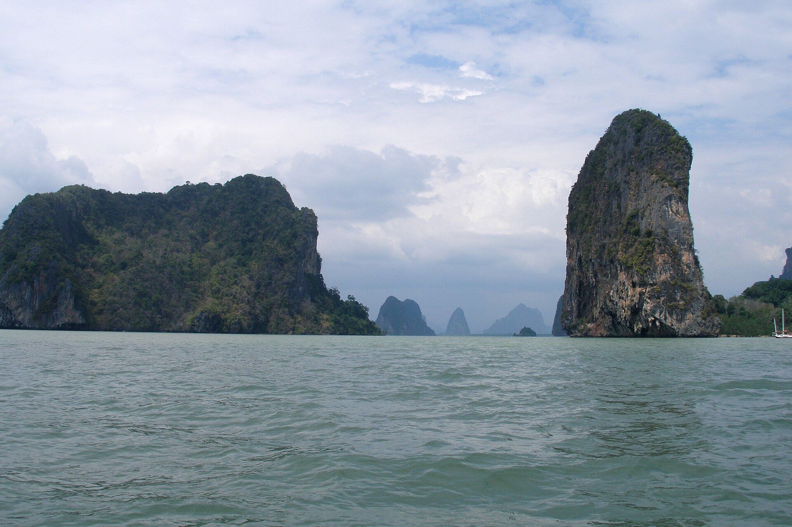

画像と出典の紹介
画像の紹介
この画像は、タイのパンガー湾に浮かぶ島々と海の風景を写したものです。
石灰岩の島々が海から立ち上がる様子が分かります。

作品名：Dramatic karst landscape of Phang Nga Bay, Thailand
作者名：Vyacheslav Argenberg
元の掲載ページ：
Wikimedia Commons
ライセンス：
CC BY 4.0
画像の変更：なし